Příklady
by Jiří Znamenáček
Úvod
Na předchozím slajdu jsme viděli, že regulární výrazy v počítačovém smyslu slova jsou spíše vyhledávací vzory v řetězcích. Jako takové se ve svém výrazivu a obsažnosti liší podle použitého programového prostředku (ačkoli většina z nich je minimálně jistou podmnožinou regexpů z jazyka Perl).
V dalším si z praktických důvodů ukážeme příklady regexpů v jazyce Python, a to za pomoci grafického nástroje kiki-re.
Syntaxe regexpů
Formálně je regexp skupina znaků a tzv. řídicích znaků, které dohromady popisují množinu vyhovujících řetězců.
[1-9]\.[A-Z] bude v zadaném textu hledat názvy školních tříd (ve tvaru číslo.písmeno).
Regexpy se dají skládat, tzn. že máme-li dva regexpy A a B, tak jejich složení (konkatenace) AB je také regexp.
ab, který vyhledává řetězce ab, tak jeho složeni s regexpem c, který vyhledává řetězec c, bude regexp abc, který bude hledat právě tyto třípísmenné sekvence abc.
Přitom řídicí znaky jsou také obyčejné znaky (nebo jejich sekvence), takže pokud je chceme použít v jejich původním (znakovém) významu, musíme je tak označit. Většinou se tak děje pomocí speciálního znaku \ („zpětné lomítko“, backslash).
. („tečka“) slouží k namapování (téměř) libovolného znaku, takže chceme-li namapovat skutečně právě pouze tečku, musíme použít sekvenci \..
. & \.
V následujících příkladech budeme pomocí kiki-re zjišťovat, jaké podřetězce vyhovují v rámci následujícího jednoduchého fragmentu HTML...
<p> Jednoduchý HTML-odstavec se <em>zvýrazněným</em> textem a více řádkami. </p>
..zadaným vstupním regexpům.
regexp: . (jeden jakýkoli znak, všechny zásahy)
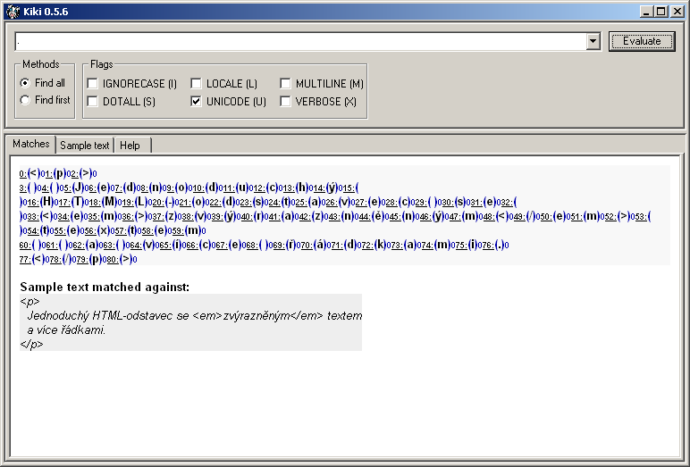
regexp: . (jeden jakýkoli znak, první zásah)
regexp: \. (tečka, všechny zásahy)
* & DOTALL
Nad stejným textem zkusme něco dalšího. Přitom pro zjednodušení budeme vždy uvažovat všechny zásahy.
regexp: e. (písmeno e následované právě jedním libovolným znakem)
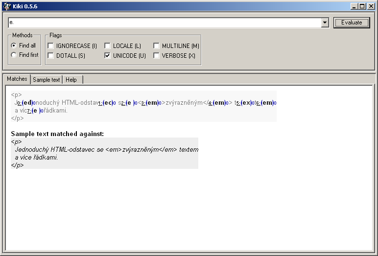
regexp: e.* (písmeno e následované libovolným počtem libovolných znaků, výchozí chování příznaku DOTALL)
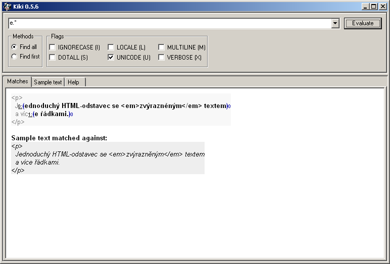
* („hvězdička“) způsobil libovolný počet opakování předchozího znaku v regexpu. Zde jím je tečka, tedy „cokoliv“, proto regexp našel od prvního výskytu písmena e na každém řádku vše až do konce řádku. Důvodem je výchozí chování příznaku DOTALL – řídicí znak „tečka“ nezahrnuje odřádkování, proto sekvenci .* není možno aplikovat „přes okraj“ řádků.
regexp: e.* (písmeno e následované libovolným počtem libovolných znaků, příznak DOTALL aktivován)
DOTALL. Nyní „tečka“ zahrnuje i odřádkování, proto regexp našel první výskyt písmena e a od něj doslova „sežral“ vše až po konec prohledávaného textu. Sekvenci .* je totiž nyní dovoleno expandovat i přes odřádkování, a tak také učiní.
„Chamtivost“
Zkusme nyní něco praktičtějšího – najít všechny tagy v ukázkovém HTML:
regexp: <.*>
DOTALL:
regexp: <.*> (plus přepnutý DOTALL)
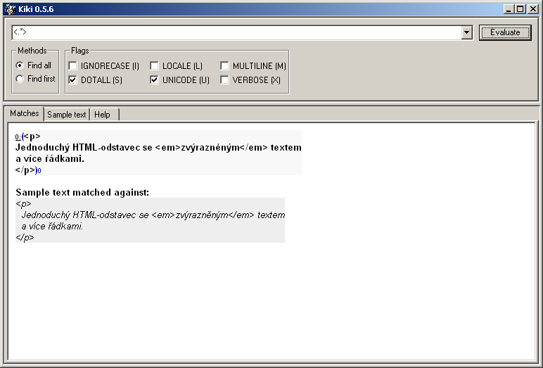
.* způsobila zachycení libovolného znaku libovolněkrát (a v tomto případě i včetně odřádkování), takže regexp prostě našel úplně všechno až po poslední možnou uzavírací závorku >, kterou má předepsanou ve vzoru.
regexp: <.*?> (a stále přepnutý DOTALL, i když tady a teď už na něm nezáleží)
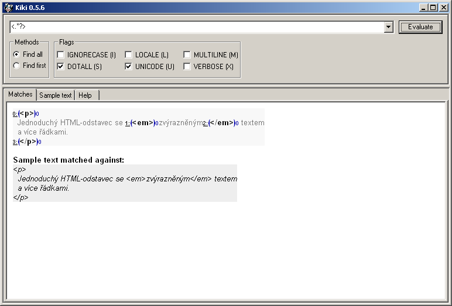
? přepnul chování regexpu z výchozího „chamtivého“ na „nechamtivé“. Sekvence .* proto nyní zachytí už pouze nejmenší možnou vyhovující skupinu znaků.
Výběr znaků
Zkusme naši ukázku ještě více zpraktičnit – zajímají nás přece hlavně jména použitých elementů a pro to určitě nepotřebujeme koncové tagy. Regexp <.*?> správně zachytává všechny tagy, tudíž nějak potřebujeme z této množiny vynechat ty koncové. A ty se liší právě znakem /.
regexp: <[^/].*?>
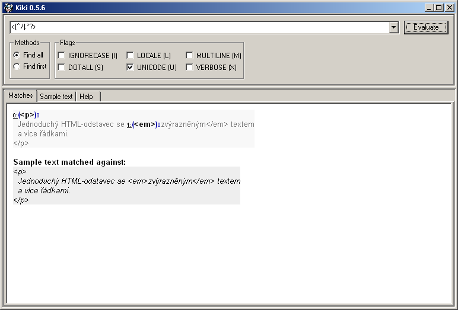
[^/] předepsali, že za otvírací závorkou nesmí být znak /.
Formálně sekvence [^] předepisuje, že všechny znaky vyjmenované mezi [^ a ] se nemají v tomto místě regexpu nacházet. Komplementární sekvence [] naopak říká, že všechny znaky mezi [ a ] se tam nacházet mají, jak ukazuje následující triviální příklad pro zachycení koncových tagů:
regexp: <[/].*?>
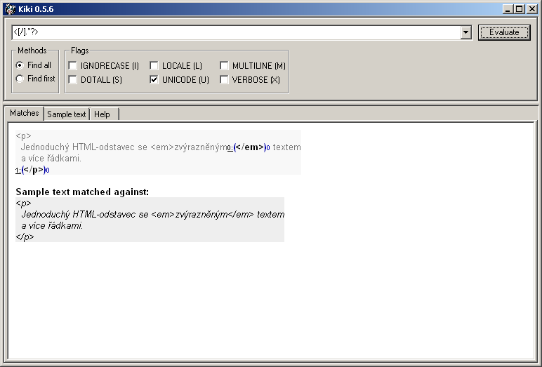
Pro výčet s jedním prvek je však zcela zbytečné používat výčet, takže k dosažení stejného výsledku samozřejmě postačí pouhé uvedení znaku / na správném místě regexpu:
regexp: </.*?>
Podskupiny
Dosud jsme hledali elementy v textu včetně jejich závorek. Jelikož závorky tyto elementy určují, v regulárním výrazu se bez nich neobejdeme. Na výstupu je pak můžeme z nalezených řetězců odstranit řetězcovými operacemi, ale stejně tak si můžeme pomoci už přímo v regexpu.
regexp: <(.*?)>
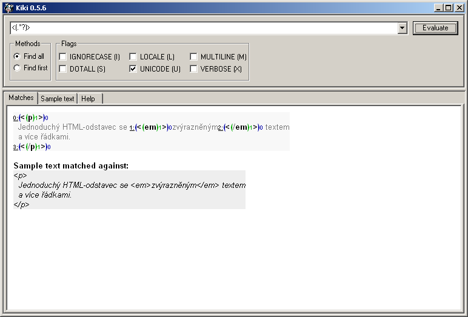
regexp: <([^/].*?)>
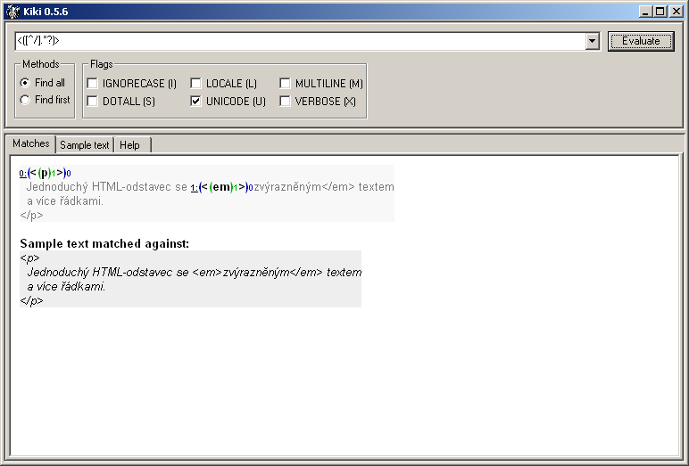
Speciální sekvence
Doplňme náš testovací HTML-fragment o definici atributu:
<p class="para1"> Jednoduchý HTML-odstavec se <em>zvýrazněným</em> textem a více řádkami. </p>
Jak hned uvidíme, přítomnost atributu na elementu náš vycizelovaný regexp pro zjišťování jména elementu beznadějně rozhodí:
regexp: <([^/].*?)>
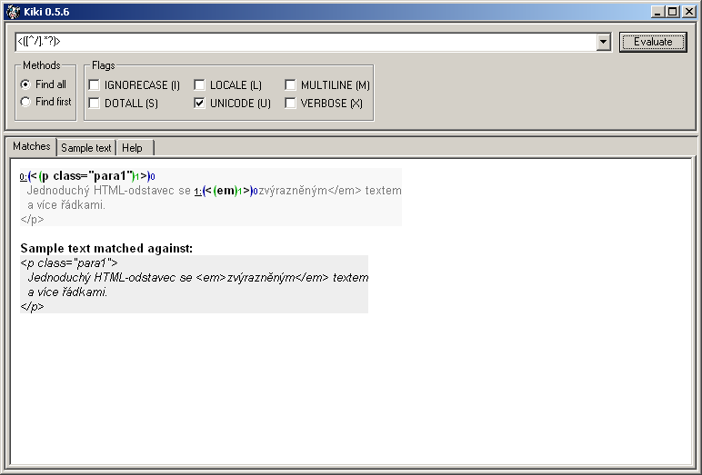
.*? stále odchytí všechny znaky mezi oběma uzavíracími závorkami elementu. Jen bohužel pro nás to v tomto případě není u paragrafu jen jeho jméno, ale i všechno ostatní.
regexp: <(\w+).*?>
\w odchytí všechny alfanumerické znaky (v základním nastavení podle ASCII, jinak podle aktuálního LOCALE nebo UNICODE). Speciální znak + znamená „alespoň jedno opakování předchozího regexpu“. Dohromady tedy uvedený regexp bude hledat všechny řetězce, které budou začínat na levou špičatou závorku (<) následovanou alespoň jedním alfanumerickým znakem (\w+), který/é si navíc zapamatujeme (()), a dále libovolnou sadou znaků až po nejbližší pravou špičatou závorku (.*?>).
regexp: <(\w*).*?>
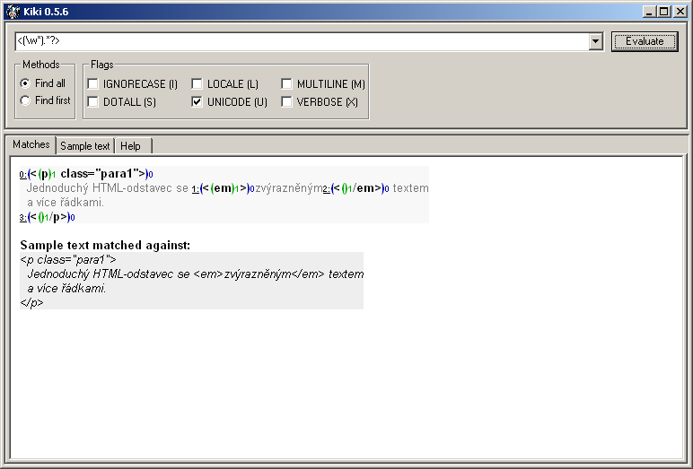
+) za „klidně i žádný“ (*) a najednou se nám odchytávají i koncové elementy. Ale bližší pohled odhalí, proč to tak je – všimněte si prázdných zelených skupin číslo 1 před uzavíracím lomítkem koncových elementů. Skupina \w* totiž odchytila „nic“, jak jí dovolil speciální znak *, a o zachycení zbytku znaků už se postaral „univerzální požírač“ .* (tedy „sežer cokoliv libovolněkrát“).
Vyjmenování znaků
Zatím jsme hledali jméno elementu pomocí operátoru ., který akceptuje („sežere“) prakticky cokoliv, případně pomocí specální sekvence \w, která akceptuje alfanumerické znaky. V důsledku bychom tak mohli akceptovat i jména elementů, která by se ve skutečném HTML neměla vyskytovat – jako třeba jména začínající na číslici nebo obsahující zakázané znaky.
Zkusme proto najít vhodnější verzi regexpu, která zvládne správně i následující HTML-fragment:
<p class="para1"> Jednoduchý HTML-odstavec se <em>zvýrazněným</em> textem a <9a>více</9a> řádkami. </p>
regexp: <([a-zA-Z]\w*).*?>
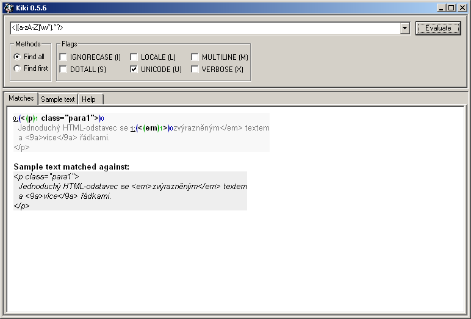
[a-zA-Z] regexpu říkáme, že v daném místě musí být právě jedno písmeno (správné elementy totiž začínají písmenem), a to z celé ASCII-abecedy (pro vyjmenování tedy můžeme použít rozsahy). Za ní pak mohou následovat čísla nebo písmena další, ale také klidně žádné (\w*).
regexp: <([A-Z]\w*).*?> (plus nastaven příznak IGNORECASE)
IGNORECASE toto vypne. Proto v tomto příkladu řídicí sekvence [A-Z] zachytí názvy elementů, které jsou zde psané malými písmeny.
K uvedenéme problému můžeme přistoupit i opačně – místo povolených znaků na prvním místě za závorkou < můžeme naopak vyjmenovat znaky zakázané, tedy kupříkladu číslice a ukončovací lomítko /:
regexp: <([^0-9/]\w*).*?>
Podívat se na problém z „druhé strany“ je někdy velmi výhodné (vzpomeňte si třebas na důkazy sporem), ale zrovna v tomhle případě to funguje jenom proto, že víme, co v našem souboru zakazujeme. Pro obecný soubor by tenhle konkrétní přístup beznadějně selhal, protože by povolil všechny nezakázané znaky, a těch je rozhodně více než písmen abecedy, která mají být v tomto případě jediná povolena.
Na závěr
Ukončeme naši seznamovací procházku po regexpech pár (neuspořádanými) poznámkami:
- Regexp je sekvence znaků a řídicích znaků, které dohromady vytváří vzor, který se regexp pokouší najít v prohledávaném textu.
- Vzor z regexpu je hledán ve své celistvosti – nalezené vyhovující řetězce jsou zaznamenány do tzv. skupin (groups), které je pak možné procházet.
- Kromě celých vyhledaných skupin je možné vybrat a zapamatovat si, případně též použít uvnitř regexpu samotného, další dodatečné podskupiny uvnitř vyhledaných.
- Chování regexpů je možné řídit několika globálními přepínači. Týká se to konkrétního chování speciálních řídicích sekvencí plus celého regexpu vůči takovým věcem, jako jsou nové řádky, kódování textu a podobně.
- Ke stejným výsledkům je možné často dojít různými cestami. Ne vždy jsou tyto cesty navzájem zaměnitelné pro všechny (krajní) případy.
- A v neposlední řadě – regexpy pro různé programové prostředky se dosti často vzájemně podstatně liší.